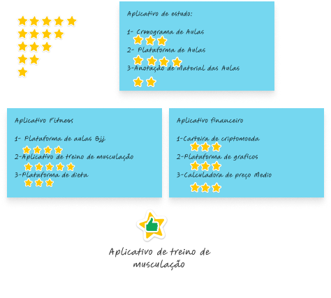

Projeto PowerUP - Etapa 01: Qual foi minha motivação para iniciar esse projeto?
Comecei a estudar UX/UI e percebi a importância de colocar a mão na massa.
A prática no design é fundamental para aprender as etapas e fixar na mente os processos do UX/UI.
Então, segui um processo de ideação para decidir qual projeto seria realizado.
Os critérios utilizados foram:
1- Precisava ser um aplicativo para celular,
2- Ser relevante,
3- Fácil de encontrar usuários,
4- Ter utilidade no meu dia a dia,
5- Ter concorrentes.
Foram gerados três tópicos de ideias: Fitness, Plataforma de Estudos e Finanças. No total, 13 ideias
foram desenvolvidas e avaliadas com estrelas. O aplicativo de treino de musculação recebeu a maior
pontuação.
Diamante Duplo
Ao adotar a abordagem do Diamante Duplo em meu processo de UX, dividi as atividades em duas etapas
cruciais. Inicialmente, dediquei-me à pesquisa aprofundada para validar a existência e a natureza do
problema em questão. Posteriormente, entrei na fase de concepção e teste de soluções, utilizando
insights adquiridos durante a etapa de pesquisa para informar minhas decisões de design. Essa
metodologia robusta proporciona uma compreensão holística do problema e orienta o desenvolvimento de
soluções eficazes e centradas no usuário.
